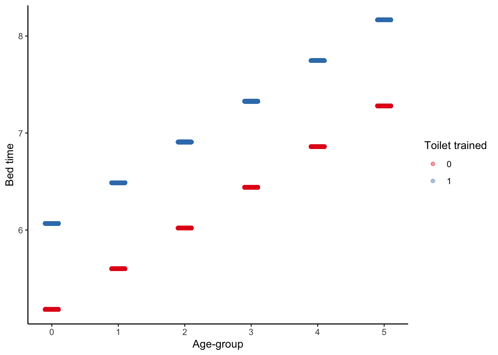

Chapter 4 Static
Required reading
- Healy, Kieran, 2019, Data Visualization: A Practical Introduction, Princeton University Press, Chapters 3 and 4, https://socviz.co/.
- Wickham, Hadley, and Garrett Grolemund, 2017, R for Data Science, Chapter 28, https://r4ds.had.co.nz/.
- Hodgetts, Paul, 2020, ‘The ggfortify Package’, 31 December, https://www.hodgettsp.com/posts/r-ggfortify/.
- Zinsser, William, 1976 [2016], On Writing Well. (Any edition is fine. This book is first, despite alphabetical order because if you’re serious about improving your writing then you should start with this book. It only takes a few hours to read. You’ll go onto other books, but start with this one.)
- Zinsser, William, 2009, ‘Writing English as a Second Language’, Lecture, Columbia Graduate School of Journalism, 11 August, https://theamericanscholar.org/writing-english-as-a-second-language/. (I’m realistic enough to realise that requiring a book, even though I’ve said it’s great and it’s short, is a bit of a stretch. If you really don’t want to commit to reading the Zinsser, then please at least read this ‘crib notes’ version of it.)
- Alexander, Monica, 2019, ‘The concentration and uniqueness of baby names in Australia and the US’, https://www.monicaalexander.com/posts/2019-20-01-babynames/. (Look at how Monica explains concepts, especially the Gini coefficient, in a way that you can understand even if you’ve never heard of it before.)
- Bronner, Laura, 2020, ‘Quant Editing’, http://www.laurabronner.com/quant-editing. (Read these points and evaluate your own writing against them. It’s fine to not comply with them if you have a good reason, but you need to know that you’re not complying with them).
- (The) Economist, 2013, ‘Johnson: Those six little rules’, Prospero, 29 July 2013, available at: https://www.economist.com/prospero/2013/07/29/johnson-those-six-little-rules.
- Girouard, Dave, 2020, ‘A Founder’s Guide to Writing Well’, First Round Review, 4 August, https://firstround.com/review/a-founders-guide-to-writing-well/.
- Graham, Paul, 2020, ‘How to Write Usefully’, http://paulgraham.com/useful.html. (Graham is good at writing for a programmer, but if you have a similar background then you may like this.)
Recommended reading
- (The) Economist, 1991 [2014], ‘The Economist Style Guide’, Twelfth edition. (Any edition is fine. Pick a point or two each day and think about how it related to your own writing.)
- Cochrane, John H., 2005, ‘Writing Tips for Ph. D. Students’, https://faculty.chicagobooth.edu/john.cochrane/research/papers/phd_paper_writing.pdf. (This is aimed at academic research papers, but parts are still broadly relevant. And if you’re going into academia then this is very relevant.)
- Codrey, Laura, 2013, ‘Churchill’s call for brevity’, 17 October, https://blog.nationalarchives.gov.uk/churchills-call-for-brevity/.
- Five Thirty Eight, 2020, Pick almost any article in their sports (https://fivethirtyeight.com/sports/) or politics (https://fivethirtyeight.com/politics/) sections. (The people at 538 write beautifully. Look at how their titles tell you exactly what is going on, or what they found. Look at how nicely their first paragraphs motivates you to read the rest of the article. Why am I reading about BYU basketball when I’m indifferent to both BYU and college basketball? Because that title and first paragraph hooked me.)
- Graham, Paul, 2005, ‘Writing, Briefly’, http://paulgraham.com/writing44.html.
- Patrick, Cameron, 2019, ‘Plotting multiple variables at once using ggplot2 and tidyr’, 26 November, https://cameronpatrick.com/post/2019/11/plotting-multiple-variables-ggplot2-tidyr/.
- Patrick, Cameron, 2020, ‘Making beautiful bar charts with ggplot’, 15 March, https://cameronpatrick.com/post/2020/03/beautiful-bar-charts-ggplot/.
- Shapiro, Jesse M., ‘Four Steps to an Applied Micro Paper’, https://www.brown.edu/Research/Shapiro/pdfs/foursteps.pdf. (This is mostly recommended for the part about ‘the robot’ with regard to your data section.)
- Shapiro, Julian, ‘Writing Well’, https://www.julian.com/guide/write/intro.
- Strunk, William Jr., 1959 [2009] ‘The Elements of Style’. (Any edition is fine. Eventually you’ll move beyond this, but it’s important to know the rules before you break them).
- Vanderplas, Susan, Dianne Cook, and Heike Hofmann, 2020, ‘Testing Statistical Charts: What Makes a Good Graph?’, Annual Review of Statistics and Its Application, https://www.annualreviews.org/doi/abs/10.1146/annurev-statistics-031219-041252
Examples of well-written papers
- Barron, Alexander TJ, Jenny Huang, Rebecca L. Spang, and Simon DeDeo. “Individuals, institutions, and innovation in the debates of the French Revolution.” Proceedings of the National Academy of Sciences 115, no. 18 (2018): 4607-4612.
- Chambliss, Daniel F. “The Mundanity of Excellence: An Ethnographic Report on Stratification and Olympic Swimmers.” Sociological Theory 7, no. 1 (1989): 70-86. doi:10.2307/202063.
- Joyner, Michael J. “Modeling: optimal marathon performance on the basis of physiological factors.” Journal of Applied Physiology 70, no. 2 (1991): 683-687.
- Kharecha, Pushker A., and James E. Hansen, 2013, ‘Prevented mortality and greenhouse gas emissions from historical and projected nuclear power’, Environmental science & technology, 47, no. 9, pp. 4889-4895.
- Samuel, Arthur L., 1959, ‘Some studies in machine learning using the game of checkers’, IBM Journal of research and development, 3, no. 3, pp. 210-229.
- Wardrop, Robert L., 1995, ‘Simpson’s paradox and the hot hand in basketball’, The American Statistician, 49, no. 1, 24-28.
Key concepts/skills/etc
- Show the reader your raw data, or as close as you can come to it.
- Use either
geom_pointorgeom_barinitially. - Writing efficiently and effectively is a requirement if you want your work to be convincing.
- Don’t waste your reader’s time.
- A good title says what the paper is about, a great title says what the paper found.
- For a six-page paper, a good abstract is a three to five sentence paragraph. For a longer paper your abstract can be slightly longer.
Key libraries
ggplotpatchwork
Key functions/etc
ggplot::geom_point()ggplot::geom_bar()
Quiz
- I have a dataset that contains measurements of height (in cm) for a sample of 300 penguins, who are either the Adeline or Emperor species. I am interested in visualizing the distribution of heights by species in a graphical way. Please discuss whether a pie chart is an appropriate type of graph to use. What about a box and whisker plot? Finally, what are some considerations if you made a histogram? [Please write a paragraph or two for each aspect.]
- Assume the dataset and columns exist. Would this code work?
data %>% ggplot(aes(x = col_one)) %>% geom_point()(pick one)?- Yes
- No
- If I have categorical data, which geom should I use to plot it (pick one)?
geom_bar()geom_point()geom_abline()geom_boxplot()
- Why are box plots often inappropriate (pick one)?
- They hide the full distribution of the data.
- They are hard to make.
- They are ugly.
- The mode is clearly displayed.
- Which of the following is the best title (pick one)?
- “Problem Set 1”
- “Unemployment”
- “Examining Canada’s Unemployment (2010-2020)”
- “Canada’s Unemployment Increased between 2010 and 2020”
4.1 Introduction
In order to convince someone of your story, your paper must be well-written, well-organized, and easy to follow. It should flow easily from one point to the next. It should have proper sentence structure, spelling, vocabulary, and grammar. Each point should be articulated clearly and completely without being overly verbose. Papers should demonstrate your understanding of the topics you are writing about and your confidence in discussing the terms, techniques and issues that are relevant. References must be included and properly cited because this enhances your credibility.
People who need to write: founders, VCs, lawyers, software engineers, designers, painters, data scientists, musicians, filmmakers, creative directors, physical trainers, teachers, writers. Learn to write.
This is great advice. Writing well has done just as much for me as knowing how to code. I’d add that if you’re intimidated by writing, start a blog and write often about something you’re interested in. You’ll get better. At least that’s what I’ve done for the past 10 years. :)
This chapter is about writing. By the end of it you will have a better idea of how to write short, detailed, quantitative papers that communicate exactly what you want them to and don’t waste the time of your reader.
One critical part of telling stories with data, is that it’s ultimately the data that has to convince them. You’re the medium, but the data are the message. To that end, the easiest way to try to convince someone of your story is to show them the data that allowed you to come to that story. Plot your raw data, or as close to it as possible.
While ggplot is a fantastic tool for doing this, there is a lot to that package and so it can be difficult to know where to start. My recommendation is that you start with either a scatter plot or a bar chart. What is critical is that you show the reader your raw data. These notes run through how to do that. It then discusses some more advanced options, but the important thing is that you show the reader your raw data (or as close to it as you can). Students seem to get confused what ‘raw’ means; I’m using it to refer to as close to the original dataset as possible, so no sums, or averages, etc, if possible. Sometimes your data are too disperse for that or you’ve got other constraints, so there needs to be an element of manipulation. The main point is that you, at the very least, need to plot the data that you’re going to be modelling. If you are dealing with larger datasets then just take a 10/1/0.1/etc per cent sample.

Figure 4.1: Show me the data!
Source: YouTube screenshot.
4.2 Graphs
Graphs are critical to tell a compelling story. And the most important thing with your graphs is to plot your raw data. Again: Plot. Your. Raw. Data.
Let’s look at a somewhat fun example from the datasauRus package (Locke and D’Agostino McGowan 2018).
library(datasauRus)
# Code from: https://juliasilge.com/blog/datasaurus-multiclass/
datasaurus_dozen %>%
filter(dataset %in% c("dino", "star", "away", "bullseye")) %>%
group_by(dataset) %>%
summarise(across(c(x, y), list(mean = mean, sd = sd)),
x_y_cor = cor(x, y)
) %>%
ungroup()## # A tibble: 4 x 6
## dataset x_mean x_sd y_mean y_sd x_y_cor
## <chr> <dbl> <dbl> <dbl> <dbl> <dbl>
## 1 away 54.3 16.8 47.8 26.9 -0.0641
## 2 bullseye 54.3 16.8 47.8 26.9 -0.0686
## 3 dino 54.3 16.8 47.8 26.9 -0.0645
## 4 star 54.3 16.8 47.8 26.9 -0.0630And despite these similarities at a summary statistic level, they’re actually very different, well, beasts, when you plot the raw data.
datasaurus_dozen %>%
filter(dataset %in% c("dino", "star", "away", "bullseye")) %>%
ggplot(aes(x=x, y=y, colour=dataset)) +
geom_point() +
theme_minimal() +
facet_wrap(vars(dataset), nrow = 2, ncol = 2) +
labs(colour = "Dataset")
4.2.1 Bar chart
Bar charts are useful when you have one variable that you want to focus on. Hint: you almost always have one variable that you want to focus on. Hence, you should almost always include at least one (and likely many) bar charts. Bar charts go by a variety of names, depending on their specifics. I recommend the R Studio Data Viz Cheat Sheet.
To get started, let’s simulate some data.
set.seed(853)
number_of_observation <- 10000
example_data <- tibble(person = c(1:number_of_observation),
smoker = sample(x = c("Smoker", "Non-smoker"),
size = number_of_observation,
replace = TRUE),
age_died = runif(number_of_observation,
min = 0,
max = 100) %>% round(digits = 0),
height = sample(x = c(50:220),
size = number_of_observation,
replace = TRUE),
num_children = sample(x = c(0:5),
size = number_of_observation,
replace = TRUE,
prob = c(0.1, 0.2, 0.40, 0.15, 0.1, 0.05))
)First, let’s have a look at the data.
## # A tibble: 6 x 5
## person smoker age_died height num_children
## <int> <chr> <dbl> <int> <int>
## 1 1 Smoker 55 80 3
## 2 2 Non-smoker 54 78 2
## 3 3 Non-smoker 84 109 1
## 4 4 Smoker 75 114 4
## 5 5 Smoker 32 135 1
## 6 6 Smoker 37 220 0Now let’s plot the age distribution. Based on our simulated data, we’re expecting a fairly uniform plot.

Now let’s make it look a little better. There are themes that are built into ggplot, or you can install other themes from other packages, or you can edit aspects yourself. I’d recommend starting with the ggthemes package for some fun ones, but I tend to just use classic or minimal. Remember that you must always refer to your graphs in your text (Figure 4.2).
example_data %>%
ggplot(mapping = aes(x = age_died)) +
geom_bar() +
theme_minimal() +
labs(x = "Age died",
y = "Number",
title = "Number of people who died at each age",
caption = "Source: Simulated data.")
Figure 4.2: Number of people who died at each age
We may want to facet by some variable, in this case whether the person is a smoker (Figure 4.3).
example_data %>%
ggplot(mapping = aes(x = age_died)) +
geom_bar() +
theme_minimal() +
facet_wrap(vars(smoker)) +
labs(x = "Age died",
y = "Number",
title = "Number of people who died at each age, by whether they smoke",
caption = "Source: Simulated data.")
Figure 4.3: Number of people who died at each age, by whether they smoke
Alternatively, we may wish to colour by that instead (Figure 4.4). I’ll filter to just a handful of age-groups to keep it tractable.
example_data %>%
filter(age_died < 25) %>%
ggplot(mapping = aes(x = age_died, fill = smoker)) +
geom_bar(position = "dodge") +
theme_minimal() +
labs(x = "Age died",
y = "Number",
fill = "Smoker",
title = "Number of people who died at each age, by whether they smoke",
caption = "Source: Simulated data.")
Figure 4.4: Number of people who died at each age, by whether they smoke
It’s important to recognise that a boxplot hides the full distribution of a variable. Unless you need to communicate the general distribution of many variables at once then you should not use them. The same box plot can apply to very different distributions.
4.2.2 Scatter plot
Often, we are also interested in the relationship between two series. We’ll do that with a scatter plot. In this case, let’s simulate some data, say years of education and income.
set.seed(853)
number_of_observation <- 500
scatter_data <-
tibble(years_of_education = runif(n = number_of_observation, min = 10, max = 25),
error = rnorm(n= number_of_observation, mean = 0, sd = 10000),
) %>%
mutate(income = years_of_education * 5000 + error,
income = if_else(income < 0, 0, income))
head(scatter_data)## # A tibble: 6 x 3
## years_of_education error income
## <dbl> <dbl> <dbl>
## 1 15.4 -13782. 63180.
## 2 11.8 7977. 66985.
## 3 17.3 -9787. 76498.
## 4 14.7 12999. 86689.
## 5 10.6 -1500. 51302.
## 6 16.1 1911. 82202.Now let’s look at income as a function of years of education (Figure 4.5).
scatter_data %>%
ggplot(mapping = aes(x = years_of_education, y = income)) +
geom_point() +
theme_minimal() +
labs(x = "Years of education",
y = "Income",
title = "Relationship between income and years of education",
caption = "Source: Simulated data.")
Figure 4.5: Relationship between income and years of education
4.2.3 Other
4.2.3.1 Best fit
If we’re interested in quickly adding a line of best fit then, continuing with the earlier income example, we can do that with geom_smooth() (Figure 4.6).
scatter_data %>%
ggplot(mapping = aes(x = years_of_education, y = income)) +
geom_point() +
geom_smooth(method = lm, color = "black") +
theme_minimal() +
labs(x = "Years of education",
y = "Income",
title = "Relationship between income and years of education",
caption = "Source: Simulated data.")## `geom_smooth()` using formula 'y ~ x'
Figure 4.6: Relationship between income and years of education
4.2.3.2 Histogram
If we want to get counts by groups then we may want to use a histogram. Figure 4.7 shows the counts for our simulated incomes.
scatter_data %>%
ggplot(mapping = aes(x = income)) +
geom_histogram() +
theme_minimal() +
labs(x = "Income",
y = "Number",
title = "Distribution of income",
caption = "Source: Simulated data.")## `stat_bin()` using `bins = 30`. Pick better value with `binwidth`.
Figure 4.7: Distribution of income
4.2.3.3 Multiple plots
Finally, let’s try putting them together. We’re going to use the patchwork package (Pedersen 2020) and the penguins package for data. Don’t forget install.packages("palmerpenguins") as this is probably the first time you’ve used the package.
library(patchwork)
library(palmerpenguins)
p1 <-
ggplot(palmerpenguins::penguins) +
geom_point(aes(bill_length_mm, bill_depth_mm)) +
labs(x = "Bill length (mm)",
y = "Bill depth (mm)")
p2 <-
ggplot(palmerpenguins::penguins) +
geom_bar(aes(species)) +
labs(x = "Species",
y = "Number")
p1 + p2
And we can make things fairly involved fairly quickly.

4.3 Tables
Tables are also critical to tell a compelling story. We may prefer a table to a graph when there are only a few features that we want to focus on. We’ll use knitr::kable() alongside the ‘kableExtra’ package and also the gt package.
Let’s start with the kable package and the summary dinosaur data from earlier.
example_data <-
datasaurus_dozen %>%
filter(dataset %in% c("dino", "star", "away")) %>%
group_by(dataset) %>%
summarize(
Mean = mean(x),
Std_dev = sd(x),
) ## `summarise()` ungrouping output (override with `.groups` argument)| dataset | Mean | Std_dev |
|---|---|---|
| away | 54.26610 | 16.76983 |
| dino | 54.26327 | 16.76514 |
| star | 54.26734 | 16.76896 |
Even the defaults are pretty good, but we can add a few tweaks to make the table better. The first is that this many significant digits is inappropriate, we may also like to add a caption, make the column names consistent, and change the alignment.
example_data %>%
knitr::kable(digits = 2,
caption = "My first table.",
col.names = c("Dataset", "Mean", "Standard deviation"),
align = c('l', 'l', 'l')
)| Dataset | Mean | Standard deviation |
|---|---|---|
| away | 54.27 | 16.77 |
| dino | 54.26 | 16.77 |
| star | 54.27 | 16.77 |
The ‘’kableExtra’ package builds extra functionality (Zhu 2020).
The gt package (Iannone, Cheng, and Schloerke 2020) is a newer package that brings a lot of exciting features. However, being newer it sometimes has issues with PDF output.
| dataset | Mean | Std_dev |
|---|---|---|
| away | 54.26610 | 16.76982 |
| dino | 54.26327 | 16.76514 |
| star | 54.26734 | 16.76896 |
We could add sub-titles easily.
example_data %>%
gt() %>%
tab_header(
title = "Summary stats can be misleading",
subtitle = "With an example from a dinosaur!"
)| Summary stats can be misleading | ||
|---|---|---|
| With an example from a dinosaur! | ||
| dataset | Mean | Std_dev |
| away | 54.26610 | 16.76982 |
| dino | 54.26327 | 16.76514 |
| star | 54.26734 | 16.76896 |
One common reason for needing a table is to report regression results. You should consider gtsummary, stargazer, and modelsummary. But at the moment, my favourite is modelsummary (Arel-Bundock 2020).
| Model 1 | |
|---|---|
| (Intercept) | 53.590 |
| (2.119) | |
| x | -0.106 |
| (0.037) | |
| Num.Obs. | 1846 |
| R2 | 0.004 |
| R2 Adj. | 0.004 |
| AIC | 17383.0 |
| BIC | 17399.6 |
| Log.Lik. | -8688.506 |
| F | 8.072 |
4.4 Title, abstract, and introduction
A title is the first opportunity that you have to tell the reader your story. Ideally you will tell the reader exactly what you found. An effective title is critical in order to get your work read when there are other competing priorities. A title doesn’t have to be ‘cute’ to be great.
- Good: ‘On the 2019 Canadian Federal Election’. (At least the reader knows what the paper is about.)
- Better: ‘The Liberal Party performance in the 2019 Canadian Federal Election’. (At least the reader knows what the paper is about more specifically.)
- Even better: ‘The Liberal Party did poorly in rural areas in the 2019 Canadian Federal Election’. (The reader knows what the paper is about.)
You should put your name and the date on the paper because this provides an important context to the paper.
For a six-page paper, a good abstract is a three to five sentence paragraph. For a longer paper your abstract can be slightly longer. The abstract should say: What you did, what you found, and why the reader should care. Each of these should just be a sentence or two, so keep it very high level.
You should then have an introduction that tells the reader everything they need to know. You are not writing a mystery story - tell the reader the most important points in the introduction. For a six-page paper, your introduction may be two or three paragraphs. Four would likely be too much, but it depends on the context.
Your introduction should set the scene and give the reader some background. For instance, you may like to start of a little broader, to provide some context to your paper. You should then describe how your paper fits into that context. Then give some high-level results - provide more detail than you provided in the abstract, but don’t get into the weeds - and finally broadly discuss next steps or glaring weaknesses. With regard to that high-level result: you need to pick one. If you have a bunch of interesting findings, then good for you, but pick one and write your introduction around that. If it’s compelling enough then the reader will end up reading all your other interesting findings in the discussion/results sections. Finally, you should highlight the remainder of the paper.
As an example:
The Canadian Liberal Party has always struggled in rural ridings. In the past 100 years they have never won more than 25 per cent of them. But even by those standards the 2019 Federal Election was a disappointment with the Liberal Party winning only 2 of the 40 rural ridings.
In this paper we look at why the performance of the Liberal Party in this most recent election was so poor. We construct a model in which whether the Liberal Party won the riding is explained by the number of farms in the riding, the average internet connectivity, and the median age. We find that as the median age of a riding increases, the likelihood that a riding was won by the Liberal Party decreases by 14 percentage points. Future work could expand the time horizon that is considered which would allow a more nuanced understanding of these effects.
The remainder of this paper is structured as follows: Section 2 discusses the data, Section 3 discusses the model, Section 4 presents the results, and finally Section 5 discusses our findings and some weaknesses.
The recommended readings provide some lovely examples of titles, abstracts, and introductions. Please take the time to briefly read these papers.
4.5 Figures, tables, equations, and technical terms
Figure and tables are a critical aspect of convincing people of your story. In a graph you can show your data and then let people decide for themselves. And in a table you can more easily summarise your data.
Figures, tables, equations, etc, should be numbered and then referenced in the text e.g. “Figure 1 shows…” and then have Figure 1.
You should make sure that all aspects of your graph are legible. Always label all of the axes. Your graphs should have titles, and the point that you want to communicate should be clear.
If you use a technical term, then it should be briefly explained in plain language for readers who might not be familiar with it. A great example of this is this post by Monica Alexander where she explains the Gini coefficient:
To look at the concentration of baby names, let’s calculate the Gini coefficient for each country, sex and year. The Gini coefficient measures dispersion or inequality among values of a frequency distribution. It can take any value between 0 and 1. In the case of income distributions, a Gini coefficient of 1 would mean one person has all the income. In this case, a Gini coefficient of 1 would mean that all babies have the same name. In contrast, a Gini coefficient of 0 would mean names are evenly distributed across all babies.
4.6 On brevity

Figure 4.8: ‘No more than four pages, or he’s never going to read it. Two pages is preferable.’
Source: Shipman, Tim, 2020, "The prime minister’s vanishing briefs’, The Sunday Times, 23 February, available at: https://www.thetimes.co.uk/article/the-prime-ministers-vanishing-briefs-67mt0bg95 via Sarah Nickson.
Insisting on two page briefs is sensible - not ‘government by ADHD’. PM has to be across lots of issues - cannot and should not be across (most of) them in the same depth as secretaries of state. Danger lies in PM trying to take on too much and getting bogged down in detail.
This might irk officials who lack a sense of where their issue sits within the PM’s list of priorities - or the writing skills to draft a succinct brief. But there’d be very few occasions when a brief to the PM warrants more than two pages.
This is not something peculiar to the current PM - other ministers have raised the same in interviews with @instituteforgov Oliver Letwin complained of ‘huge amount of terrible guff, at huge, colossal, humungous length coming from some departments’ https://www.instituteforgovernment.org.uk/ministers-reflect/person/oliver-letwin/
Letwin sent briefs back and asked they be re-drafted to one quarter of the length. ‘Somewhere along the line the Civil Service had got used to splurge of the meaningless kind’ Similarly, Theresa Villiers talked about the civil service’s ‘frustrating tendency to produce six pages of obscure and rather impenetrable text’ and wishes she’d be firmer in sending documents back for re-drafting: https://www.instituteforgovernment.org.uk/ministers-reflect/person/theresa-villiers/
Sarah Nickson, 23 Feb 2020.
Brevity is important. Partly this because you are writing for the reader, not yourself, and your reader has other priorities. But it is also because as the writer it focuses you to consider what your most important points are, how you can best support them, and where your arguments are weakest.
If you don’t think that examples from government are persuasive, then please consider Amazon’s 2017 Letter to Shareholders, or other statements about Bezos and memo writing, for instance:
Well structured, narrative text is what we’re after rather than just text… The reason writing a 4 page memo is harder than “writing” a 20 page powerpoint is because the narrative structure of a good memo forces better thought and better understanding of what’s more important than what, and how things are related.
Jeff Bezos, 9 June 2004.
4.7 Other
Typos and other grammatical mistakes affect the credibility of your claims. If the reader can’t trust you to use a spell-checker then why should they trust you to use logistic regression? Microsoft Word has a fantastic spell-checker that is much better than what is available for R Markdown: copy/paste your work into there, look for the red lines and fix them in your R Markdown. Then look for the green lines and think about if you need to fix them in your R Markdown. If you don’t have Word then Google Docs is pretty good and so is Apple’s Pages.
A few other general tips that I have stolen from various people including the Reserve Bank of Australia’s style guide:
- Think about what you are writing. Aim to write everything as though it were on the front page of the newspaper, because one day it could be.
- Be concise. Remove as many words as possible.
- Be direct. Think about the structure of your story, and identify the key pieces of information and arrange them so that your paper flows logically from one to the next. You should use sub-headings if you need.
- Be precise. For instance, the stock-market didn’t improve or worsen, it rose or fell. Distinguish levels from rates of change.
- Be clear.
- Write simply.
- Use short sentence where possible.
- Avoid jargon.
You should break these rules when you need to. But the only way to know whether you need to break a rule is to know the rules in the first instance.
References
Arel-Bundock, Vincent. 2020. Modelsummary: Summary Tables and Plots for Statistical Models and Data: Beautiful, Customizable, and Publication-Ready. https://CRAN.R-project.org/package=modelsummary.
Iannone, Richard, Joe Cheng, and Barret Schloerke. 2020. Gt: Easily Create Presentation-Ready Display Tables. https://CRAN.R-project.org/package=gt.
Locke, Steph, and Lucy D’Agostino McGowan. 2018. DatasauRus: Datasets from the Datasaurus Dozen. https://CRAN.R-project.org/package=datasauRus.
Pedersen, Thomas Lin. 2020. Patchwork: The Composer of Plots. https://CRAN.R-project.org/package=patchwork.
Zhu, Hao. 2020. KableExtra: Construct Complex Table with ’Kable’ and Pipe Syntax. https://CRAN.R-project.org/package=kableExtra.